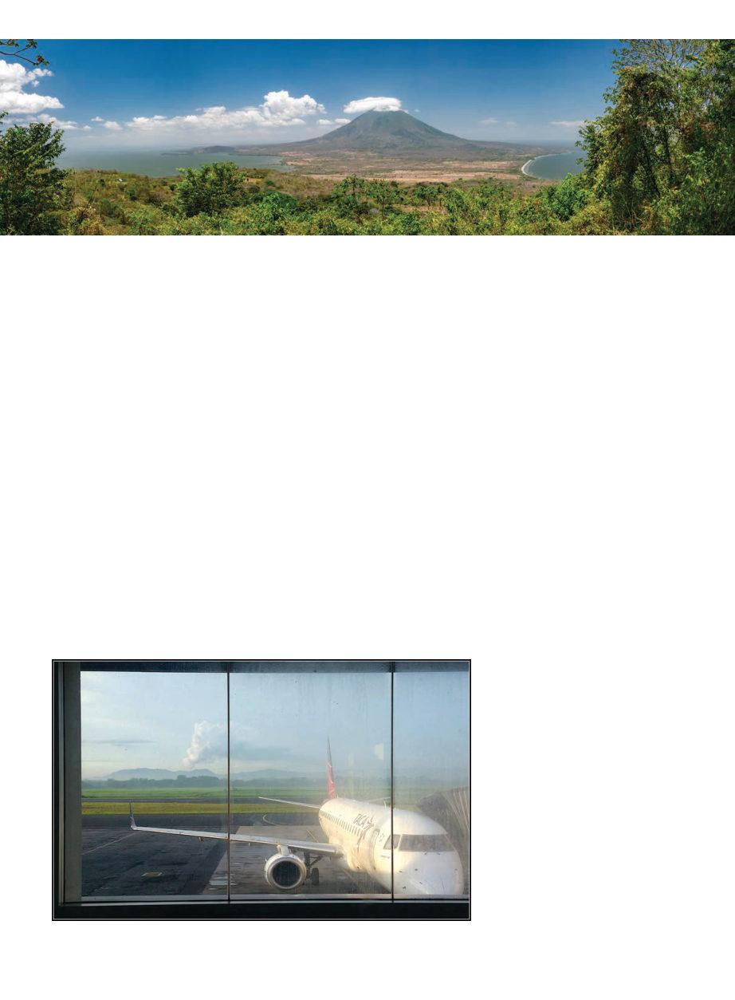

September 2019
1035
I
n the back of the pick-up, I keep
nervously glancing between the
billowing plume of smoke rising
from the volcano behind us, and the
traffic in front of us. The line of cars
and trucks grinds to a halt. The only
vehicles coming the opposite direction
on this two lane highway, it becomes
evident, are ones from our lane that
have given up and turned around.
On either side, the road is hemmed
in by the leafy verdant outer sprawl
of the Nicaraguan capital; bougain-
villea blending with colorful laundry
waving on lines, cinderblock houses
almost hidden by the irrepressible
branches that tumble around and
over them. People get out of their cars
and chat with one another. I don’t
know what everyone is saying, I don’t
speak Spanish, but I gather no one is
actually concerned about the volcano;
the volcano is normal, the traffic is
not. We’re a bit panicked because Dr.
Johan van Veen, head of the Entomol-
ogy and Apiology Department of the
National University of Costa Rica,
has a plane to catch and time is tick-
ing away.
In the back of the truck with me
is Vincent Cosgrove, a cheerful and
energetic American who runs an or-
ganization in Nicaragua called Sweet
Progress. Vincent had first come to
Nicaragua in 2013 as an entrepreneur
in the healthcare industry. He found
himself in Tipitapa, a satellite town of
Managua, and there was a problem:
62% unemployment, 82% among the
women, meant that no one had mon-
ey for even much-needed healthcare
services. Where others might have
moved on to somewhere with more
money, he instead started thinking
about how he could improve the lot
of locals.
One day while Vincent was on his
way to visit a USAID water project in
Tipitapa, at an intersection a little girl
approached his beat-up Ford Ranger
to sell him a bottle of native (melipo-
na) bee honey. He suddenly remem-
bered working with the beekeepers of
the Middlesex Beekeeping Group in
Boston twenty years earlier. He had
been a chef, they’d regularly come
into his restaurant and ultimately
taught him beekeeping. Beekeeping
was the answer! He bought the bottle
of honey.
He started helping locals form co-
ops, especially of women’s groups.
They needed equipment and train-
ing, he set about tackling both these
issues. For equipment he realized just
giving people things would be un-
sustainable and not create a sense of
ownership, so Sweet Progress orga-
nizes micro-loans for equipment that
are paid back in the form of honey
over four years, with no interest. In
this manner the groups are able to get
necessary resources without becom-
ing trapped on a repayment treadmill.
Vincent came originally as an entre-
preneur, but he doesn’t make a profit
out of this, he has found the greater
satisfaction of helping others.
As to training, Vincent has worked
tirelessly to bring in volunteers for
training, and organizations as part-
ners — among them non-governmen-
tal organizations (NGOs) and uni-
versities in the region and in the U.S.
Volunteer teams have taught seminars
(342 of them apparently) on not only
directly beekeeping-related activities
but also business management and
Development Project: Nicaragua
by Kris Fricke
Volcano plume visible from the Managua airport